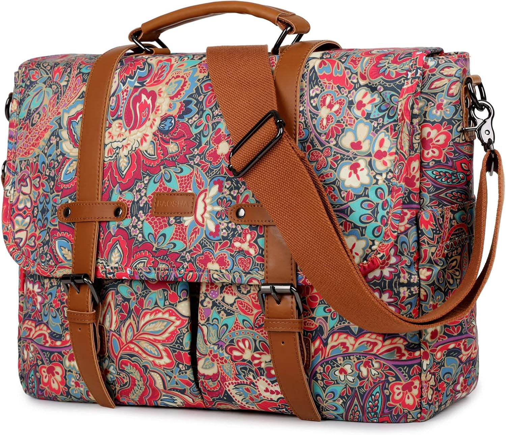

BAOSHA Bolso de hombro para mujer impresión portátil bolsa de ordenador portátil de 15: el bolso del día 165
Fin de semana: otras reglas, otros ritmos. El bolso de hoy es el BAOSHA Bolso de hombro para mujer impresión portátil bolsa de ordenador portátil de 15. No es un capricho de escaparate: es el que acompaña el bolso que no pide permiso, con 4,5★ de nota media y 161 valoraciones que respaldan la decisión.

Un bolso no cambia tu día. Cambia la manera de entrar en él: con lo que necesitas, sin lo que sobra y con la certeza de que otras 161 personas ya hicieron la misma elección antes que tú. Lo que más repiten sus compradoras: calidad.
El repositorio de bolsos aún está creciendo hacia los 365: el día 165 comparte bolso con el día 13, pero cada paso por el calendario le da un enfoque nuevo. Cuando el repositorio se complete, cada día tendrá su propio bolso definitivo.